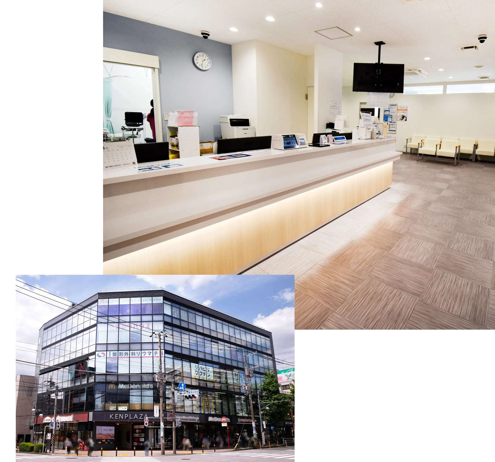

予防接種
About当院について
青葉台整形外科リウマチ科は、痛みの原因を正確に見極めることを大切にしています。
MRI・CTを活用した精密な画像診断により、骨・関節・神経・筋の状態を多角的に評価し、症状の背景にある要因まで丁寧に把握します。
そのうえで、医師の診察と理学療法士による個別リハビリを組み合わせ、最短の改善と再発予防をめざす治療を行っています。
駅前立地で、土日祝日も診療しているため、急な痛みや忙しい方でも受診しやすい、地域の皆さまが安心して相談できる「通いやすく、診断に強い整形外科」を目指しています。

Features当院の特徴
- MRI・CT検査が可能レントゲンでは捉えきれない痛みの原因を、MRI・CTで多角的に評価します。骨・関節・神経・筋の状態を正確に把握し、症状の背景まで丁寧に診断。早期発見と最適な治療方針の決定につながります。
- 生活動作を改善する個別リハビリ平日が忙しい方や、週末に突然の痛みが出た方でも受診しやすい体制です。急性の痛みやケガにも迅速に対応し、必要に応じてその日のうちに画像検査まで実施。地域の「いつでも相談できる整形外科」を目指しています。
- 診断と連携した個別リハビリ医師の診断結果をもとに、国家資格を持つセラピストが一人ひとりに合わせたリハビリを実施。痛みの改善だけでなく、再発予防や日常動作の改善までサポートします。画像診断とリハビリが連携することで、より効果的な治療を実現します。
- スポーツ整形にも対応スポーツによる痛みや障害を、MRI・CTを用いた精密な評価で原因から特定します。 競技特性や動作分析を踏まえ、復帰までの最適な治療計画を立案。成長期のスポーツ障害にも専門的に対応します。
Doctor's Schedule外来診療担当医表
| 月 | 火 | 水 | 木 | 金 | 土 | 日祝 | |
|---|---|---|---|---|---|---|---|
| 午前 | 山本院長 鈴木医師 |
山本院長 | 山本院長 | 後藤医師 高橋医師 |
山本院長 | 外来担当医 | 福井医師 |
| 午後 | 山本院長 鈴木医師 |
山本院長 | 山本院長 | 後藤医師 高橋医師 |
山本院長 | 外来担当医 | － |
| 午前 | 午後 | |
|---|---|---|
| 月 | 山本院長 鈴木医師 |
山本院長 鈴木医師 |
| 火 | 山本院長 | 山本院長 |
| 水 | 山本院長 | 山本院長 |
| 木 | 後藤医師 高橋医師 |
後藤医師 高橋医師 |
| 金 | 山本院長 | 山本院長 |
| 土 | 外来担当医 | 外来担当医 |
| 日祝 | 福井医師 | － |
Newsお知らせ
-
2026.10.20予防接種
-
2026.09.24予防接種
-
2026.09.11予防接種
-
2026.09.02お知らせ10月より、木曜日の膠原病・リウマチ内科の診療を開始します。